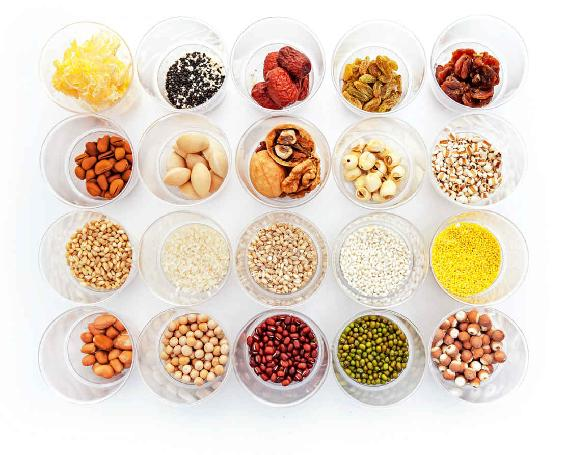
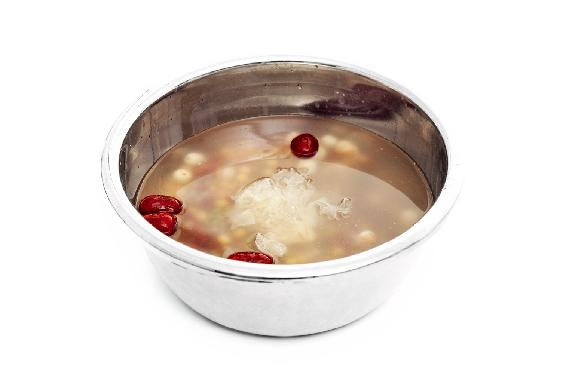
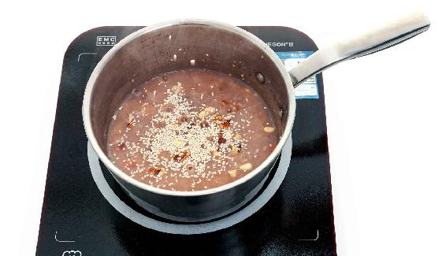
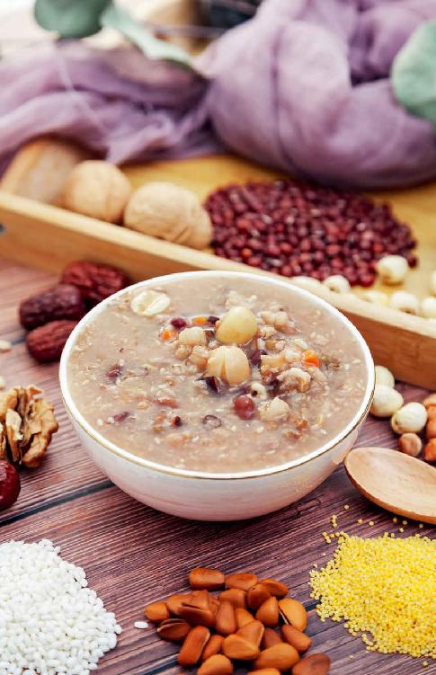
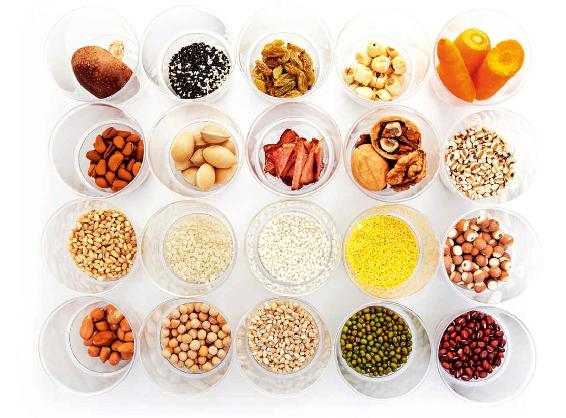
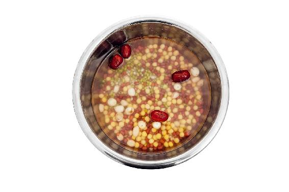
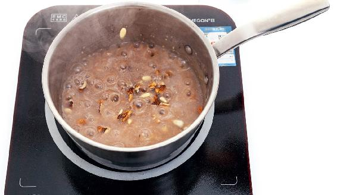
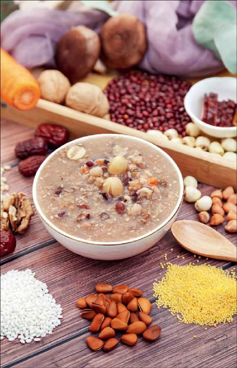
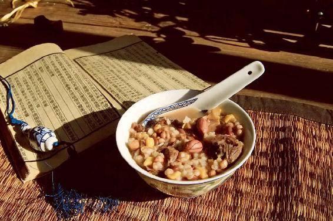

小寒节气在腊月，这个月有一个重要节日是腊八节，要喝腊八粥。小寒节气食方用的就是腊八粥的基础原料：糯米、红小豆。
它们都来源于古人常吃的“豆粥”“豆饭”。腊八粥其实就是腊月的养生粥，是可以喝一个月的。
腊月我们要准备哪些食材呢？首先是腊八粥的原料。如果您要泡腊八蒜，还要准备大蒜、米醋和红糖。
买红糖的时候要注意，别买成了赤砂糖，它不是真正的红糖。购买红糖时要注意看一下包装袋上的配料表，看写的是甘蔗还是赤砂糖。甘蔗红糖才是真红糖。
腊八粥是腊八节必不可少的。喝腊八粥不仅是传统，它也蕴含着养生的意义。
腊八粥分两种，一种是甜味的，一种是咸味的。
甜味的腊八粥也被称为佛粥，可以用来供佛。另外一种是咸味的，里面有菜有肉的是肉粥，也被称为菜粥。
其实，不管是哪种味儿的腊八粥，一定要记得做腊八粥最重要的两样材料——红小豆、糯米。
腊八粥讲究五味——米之味、豆之味、谷之味、果之味、菜之味。如果您是身体比较虚弱，或者想要好好补一补的老年人，那您还要加一个药之味。
有些北方的朋友没有喝过咸味儿的菜粥，听我说了这个配方之后都觉得有点奇怪，但尝试着喝了后，发现味道还不错。
其实，咸味儿的腊八粥很适合在腊八节这天的中午或者晚上喝，因为中午或者晚上可能会吃一些炒菜，咸味儿的腊八粥跟炒菜可能更搭配一些。而甜味儿的腊八粥，通常是在腊八节这天的早上喝，因为早餐的时候喝一点带有自然清甜味儿的粥，会让人的脾胃很舒服。
腊八粥（甜粥）

主料：可以选糯米、粳米、小米等。（粳米和籼米是大米的两个品种。北方粳米比较多，南方籼米比较多，自古以来，做药膳的时候一般都讲究用粳米，因为粳米的补益作用更强一些。）
配料：
1.豆类：可以选红豆、绿豆、豌豆等，也可以加一点黄豆和黑豆，但只放一点点就好，因为红豆、绿豆、豌豆都是小豆，好消化；而黄豆、黑豆则是大豆，相对来说不太容易消化。
2.杂粮类：可以选薏米（孕妇不放）、芡实、大麦仁、小麦仁等。
3.干果类：可以选莲子、花生、白果等，各放十几粒。
4.果蔬类：可以选银耳（1朵）、桂圆肉、红枣等。
5.粥果类：可以选松子、葡萄干、樱桃干等（适量）。

做法：
1.把主料和配料用清水泡一晚。

2.银耳撕成小朵，红枣掰开去核。核桃仁、松子切碎。把主料、配料（粥果类除外）一起加水熬成粥。粥熬好后，把粥果撒在粥面上。
允斌叮嘱：
1.老年人喝的话，建议您在熬粥的时候放一些山茱萸，这样甜味之外会带微微的酸味，味道也是不错的。山茱萸是一味补药，补肝肾，可以固摄精气。
2.因为这道粥本身就带有自然的甜味儿，所以我也把它称为甜粥。其实，您是可以不放糖的，当然，如果家里的小孩子喜欢吃甜，放一点糖也是可以的。

腊八粥（咸粥）

主料：可以选糯米、粳米、小米等。（您可以选两到三种，最好有糯米。）
配料：
1.豆类：可以选红豆、绿豆、豌豆等。
2.杂粮类：可以选薏米（孕妇不放）、芡实、大麦仁、小麦仁等。
3.干果类：可以选莲子、花生、白果等，各放十几粒。
4.菜肉类：可以用胡萝卜1根，香菇3朵，腊肉1两（50克）。
5.粥果类：核桃仁、松子、芝麻（适量）。

做法：
1.把主料和配料用清水泡一晚。芝麻和菜肉类不用泡，香菇只需提前泡发一下就可以。
2.把胡萝卜、香菇、腊肉切成丁(肥瘦相间的腊肉比较好切成丁)，核桃仁、松子切碎，芝麻炒香备用。

3.把主料、配料（粥果类除外）一起熬成粥。粥熬好后，把核桃仁、松子、芝麻一起撒在粥面上。

不管是甜味儿的腊八粥还是咸味儿的腊八粥，以上只是一个参考配方，您也可以按照自己喜欢的原料来搭配，但最好是五味俱全。
所谓五味，也就是米之味、豆之味、谷之味、果之味和菜之味，五味俱全才是一锅营养均衡的腊八粥。
腊八粥是可以多喝一段时间的，因为它补得比较均衡。
但有一点您要注意，做腊八粥时，不管怎样来搭配，腊八粥的基础是红小豆和糯米，这两样是一对绝配，是不能随便去掉的。因为有了红小豆，腊八粥才会给腊八节增添一份红红的喜庆；有了糯米，腊八粥才有黏稠的口感。
当然最主要的还是它们搭配的功效——糯米是补肾的，但它容易生湿气，红小豆是祛湿的，它们搭配在一起有补有泻。
就算您没有时间熬腊八粥，只要把糯米和红小豆配在一起煮，就是一道简单的腊八粥，也有腊八节的意味。这样煮出来的粥不仅好看、好吃，对身体也特别有益。
读者评论：全家人吃了都感觉身体暖暖的
清茶薄暮_gm：早上吃了一碗热乎乎的腊八甜粥，感觉身体舒服了很多。
果子_h3j：我熬腊八粥时放了山茱萸和栗子，感觉腊八粥像买的八宝粥一样，很好吃。
蓉蓉：腊八节煮了一锅腊八粥，全家人吃了都感觉身体暖暖的。一路有陈老师的陪伴真好，感恩！
允斌解惑：黄米与糯米的作用是否一样？
丰榕：老师好！我是内蒙古包头市人，我们这里的腊八粥是用黄米和红豆为主料做的，很好吃。黄米的黏度也很高，不知道与糯米的作用是否一样？
允斌：黏黄米也是糯的，与糯米的作用有相近之处，是可以的。
星语：老师，腊八粥里的红小豆是指圆粒的红豆，还是赤小豆？
允斌：两种都可以，赤小豆祛湿的效果更强，可以根据自己的喜好选择。
腊八节，可以说是中国的感恩节，是感恩天地、感恩祖先、感恩父母的日子。
当然，这只是我以前写书时打的一个比方，前些年被网络传抄后，有些人误认为是传统文化常识并拿来传播。其实，腊八的历史、文化内涵远比西方的“感恩节”要深厚得多。现在，我们过腊八节觉得喝碗腊八粥就可以了，其实，腊八粥在这个节日里是非常有内涵的，绝不只是一碗粥那么简单。
腊八节在冬天的最后一个月，老话说：“过了腊八就是年。”这个月，大自然完成了一年的工作，给了我们丰厚的收获，而先民为了感谢天地的赐予，就会举行仪式来祭拜祖先和神灵，感恩他们的庇佑，也祈祷来年的好收成。
腊八节的“八”字是非常有讲究的，现在我们是在腊月初八过这个节，但腊八并不只是腊月初八的简称，这个“八”还代表着八位神灵，代表着腊八之祭。
《礼记》记载：“天子大蜡八，伊耆氏始为蜡。”伊耆氏是最早开始进行蜡八之祭的天子，蜡八之祭是腊八节的前身。
先秦时代，在举行蜡祭的时候要念诵一个歌谣——蜡祭的祈祷辞。这也是中国最古老且有文字记录的一首蜡辞——《伊耆氏蜡辞》。伊耆（qí）氏是上古时期的天子，据说就是神农氏——尝百草的神农，伊耆氏这个名字有长寿的意思。药食同源的黄芪的芪字，最早也是耆，黄芪的意思就是说人吃了黄芪之后能长寿。蜡辞就是他在举行蜡祭的时候念的祷告语。
《伊耆氏蜡辞》中说道：“土反其宅，水归其壑。昆虫毋作，草木归其泽。”这是什么意思呢？大概意思就是“土啊，你要回归田地！水啊，你要回流河沟！昆虫啊，你不要作害！草木啊，你要重生于湿地！”
古人认为万物有灵，所以在祭祀的时候，就祈祷土、水、昆虫、草木都能各归其位、各司其职，不要发生泥石流、洪水、蝗灾、大旱等天灾，祈祷来年风调雨顺，收成丰硕。
药食同源的黄芪的芪字，最早也是耆，黄芪的意思就是说人吃了黄芪之后能长寿。
《礼记》记载：“天子大蜡八，伊耆氏始为蜡。”伊耆氏是最早开始进行蜡八之祭的天子，蜡八之祭是腊八节的前身。
在古代，腊月要进行两种感恩的仪式：一个是蜡（zhà）祭，一个是腊祭。蜡祭是感恩神灵的一种祭礼，腊祭是感恩祖先的一种祭礼。到了汉代的时候，它们就合二为一，蜡祭改称为腊祭了。
《史记》里也有关于腊祭的记载：“十年，张仪相秦。魏纳上郡十五县。十一年，县义渠。归魏焦、曲沃。义渠君为臣。更名少梁曰夏阳。十二年，初腊。”讲的是秦惠文君（秦王嬴驷）腊祭的事。
秦王嬴驷拜张仪为相，攻占了义渠、魏焦等地方，在曲沃（今位于山西省中南部）仿效中原的礼俗举行了腊祭。
因为这是秦国历史上第一次腊祭，所以叫初腊。
为什么司马迁要把这一次祭礼写入《史记》中呢？因为这说明秦国已经从一个蛮荒的小国开始迈入大国的行列了。举行腊祭是一个文明大国的标志。在此之前，秦国只是在军事上强盛，文化上却是落后的。

秦王嬴驷真的是一位非常有智慧的君王，因为他已经明白一个道理——军队只能征服土地，只有文化和文明才能征服人心。他举行腊祭就是在宣示秦国已经开始进入文明大国的行列了，而且有了感恩之心。
腊八节的“八”代表的八位神灵是：第一是神农；第二是后稷；第三是农神；第四是开垦田舍、田埂之人；第五是猫和老虎；第六是堤防；第七是水沟；第八是虫神。
这八位神说起来都很平常，神农氏是上古的一个人而已，只是因为他尝了百草；后稷是上古农业的开拓者；而农神是跟农业有关的人；开田舍、开田埂的也都是普通的人；猫和老虎为什么会入选呢？因为猫能吃掉田里的老鼠，老虎能吃田里的野猪；堤防和水沟都是开垦田地时必需的，因为灌溉需要水沟来引水，田地需要堤坝来防止洪水泛滥；虫神是管虫子的，不让虫灾泛滥。
这些神都很平凡，但因为他们对农业有贡献，所以古人就给予了他们尊贵的地位，并进行供奉。可以说，这是中国文化里特别重要的一点——人要有感恩之心。“得人点水之恩，须当涌泉相报”，哪怕是对动物也要一视同仁，不忘记报答它们。
事实上，如果我们时时怀着感恩之心，就会觉得心里特别幸福、美好，也能远离中医所说的致病的七情了。
腊八节是感恩的节日，当您熬好了腊八粥以后，可以先盛一碗给父母，感恩他们对你的养育；再盛一碗给家人，感恩他们的陪伴。然后一家人坐在一起喝着热乎乎的腊八粥，幸福真的就是这么简单。
读者评论：如果我们时时怀有感恩之心，就会觉得心里特别幸福、美好
勿忘我_UL：感恩父母给我生命；感恩老师让我懂得健康饮食；感恩……
行动派靖鑫：“如果我们时时怀有感恩之心，就会觉得心里特别幸福、美好！”感恩陈老师，您的这些话不仅养生，还养心。
朗诗德：感恩天地，感恩父母，感恩陈老师。今年跟着老师养生，家里备了很多养生材料，今年腊八粥需要的材料随手拈来，日子过得美滋滋的。